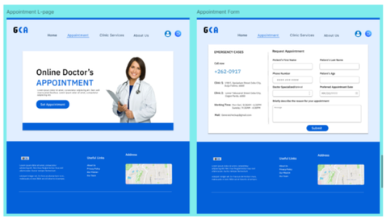
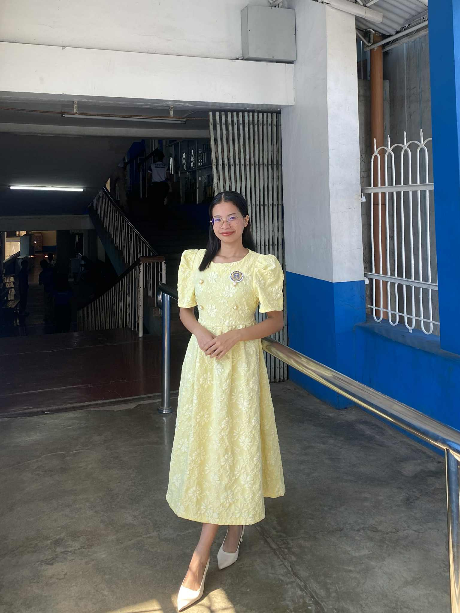
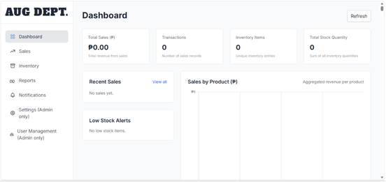
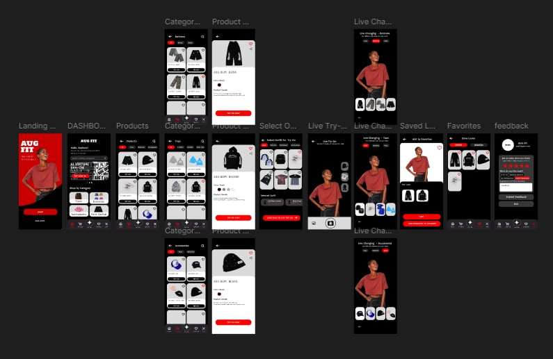
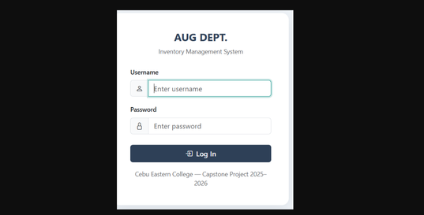
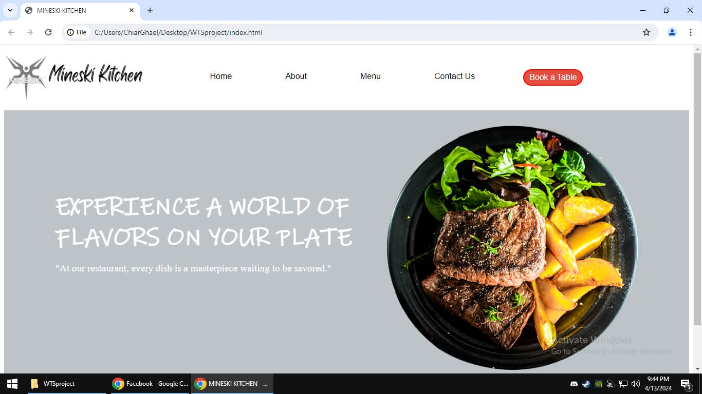
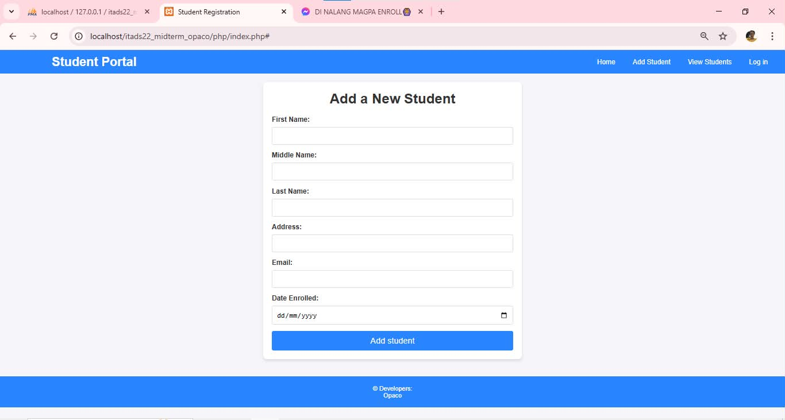
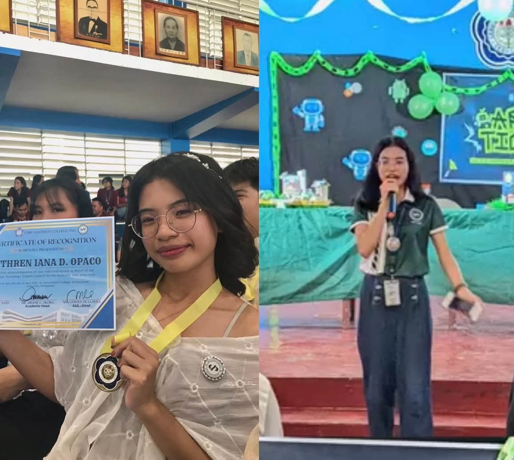
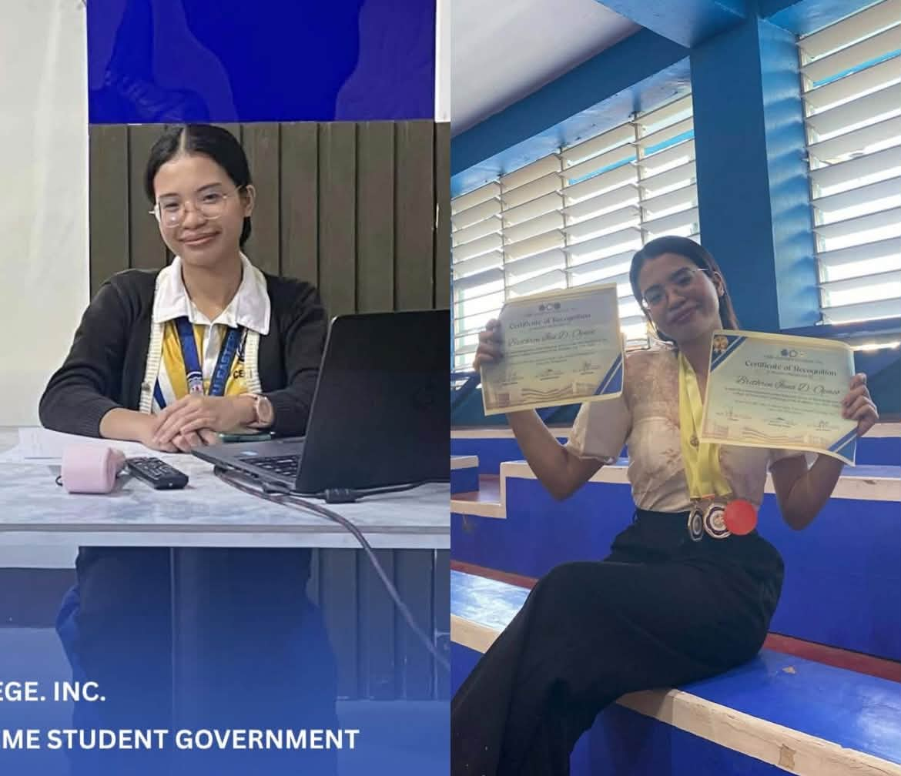

Medical Appointment System
A school project built as a relational clinic scheduler, featuring real-time doctor availability, double-booking prevention, and automated patient status tracking.
Web Application
Information Technology student with a focus on building intuitive web applications, robust systems, and thoughtful UI/UX. Driven by problem-solving, quality execution, and continuous learning.

I am a senior Information Technology student at Cebu Eastern College passionate about software development, UI/UX design, and student leadership. Driven by curiosity and practical problem-solving, I focus on building functional digital solutions while continuously expanding my technical and analytical skills.
Outside the classroom, I enjoy going places like beaches and nature, experimenting with cooking, and listening to music. I love balancing the technical logic of tech with creative projects, event organization, and continuous personal growth.
My technical skills reflect what I have learned and practiced throughout my Information Technology studies.
Through student leadership and academic activities, I continue to develop my ability to work with others, make decisions, and take responsibility while learning from new experiences.
Contest and Certificates Received
The projects I have created and developed throughout my journey as an Information Technology student, from my first year to my fourth year in college.

A school project built as a relational clinic scheduler, featuring real-time doctor availability, double-booking prevention, and automated patient status tracking.
Web Application

A school project built as a relational web portal with full CRUD features, automated low-stock alerts, and supplier transaction logs.
Web Application

An Artificial Intelligence Powered Mobile Application for Virtual Clothing Try on for Alaska Underground Clothing Store.
Mobile Application

A school project built with Python to track multi-location stock movements, featuring automated reorder thresholds and audit exports.
Web Application

A school project built as a front-end restaurant reservation portal, featuring table appointment booking, menu exploration, interactive navigation, and custom brand showcase.
Web Application

A school project built as a relational student information portal using PHP and MySQL, featuring student registration, enrollment record management, and secure directory lookups.
Web Application
Student Leader for 2 Consecutive Years

Description: -Led departmental initiatives and represented student concerns in meetings and events. -Collaborated with faculty and student leaders to organize activities and academic programs. -Strengthened communication and leadership skills through active involvement in student governance.

Assists the President in overseeing all student government activities and ensures smooth coordination between officers, committees, and school administration. Leads and supervises projects, represents the student body in meetings, and helps implement programs that promote student welfare and engagement.
Reach me through my accounts!
brethrenopaco1@gmail.com